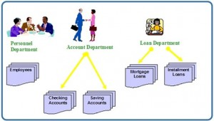
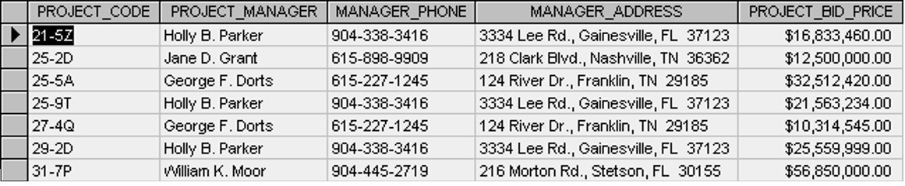

Before the Advent of Database Systems
قبل ظهور أنظمة قواعد البيانات
النص الرئيسي
Key Terms
concurrency: the ability of the database to allow multiple users access to the same record without adversely affecting transaction processing
data element: a single fact or piece of information
data inconsistency: a situation where various copies of the same data are conflicting
data isolation: a property that determines when and how changes made by one operation become visible to other concurrent users and systems
data integrity: refers to the maintenance and assurance that the data in a database are correct and consistent
data redundancy: a situation that occurs in a database when a field needs to be updated in more than one table
database approach: allows the management of large amounts of organizational information
database management software: a powerful software tool that allows you to store, manipulate and retrieve data in a variety of ways
file-based system: an application program designed to manipulate data files
لقد قطع الطريق الذي تُدار به الحواسيب البيانات (data) مسافة طويلة خلال العقود القليلة الماضية. يعتبر مستخدمو اليوم المزاياَ العديدة لنظام قاعدة البيانات (database system) أمرًا مفروغًا منه. غير أنه لم يمض وقت طويل حتى اعتمدت الحواسيب على نهج أقل أناقة وأكثر تكلفة بكثير في إدارة البيانات، يُسمى نظام الملفات (file-based system).
Exercises
Discuss each of the following terms:
data
field
record
file
What is data redundancy?
Discuss the disadvantages of file-based systems.
Explain the difference between data and information.
Use Figure 1.2 (below) to answer the following questions.
In the table, how many records does the file contain?
How many fields are there per record?
What problem would you encounter if you wanted to produce a listing by city?
How would you solve this problem by altering the file structure?
IMAGE1END Figure 1.2. Table for exercise #5, by A. Watt.
نظام الملفات (file-based system)
تتمثل إحدى طرق الاحتفاظ بالمعلومات على حاسوب في تخزينها في ملفات دائمة. لدى نظام الشركة عدد من برامج التطبيقات؛ صُمِّم كل منها لمعالجة ملفات البيانات. وقد كُتبت برامج التطبيقات هذه بطلب من المستخدمين في المؤسسة. وتُضاف التطبيقات الجديدة إلى النظام عند الحاجة إليها. ويُطلق على النظام الموصوف للتو اسم نظام الملفات (file-based system).
لنأخذ نظامًا مصرفيًا تقليديًا يستخدم نظام الملفات لإدارة بيانات المؤسسة المبيّنة في الشكل 1.1. وكما نرى، يوجد في المصرف أقسام مختلفة. ولكل قسم تطبيقات خاصة به تُدير ملفات البيانات المختلفة وتُعالجها. أما في الأنظمة المصرفية، فقد تُستخدم هذه البرامج لخصم مبلغ من حساب أو إيداع مبلغ فيه، أو للعثور على رصيد حساب، أو لإضافة قرض رهن عقاري جديد، أو لإصدار كشوف حساب شهرية.

عيوب نهج الملفات (file-based approach)
استخدام نظام الملفات للاحتفاظ بمعلومات المؤسسة ينطوي على عدد من العيوب. وفيما يلي خمسة أمثلة على ذلك.
تكرار البيانات (data redundancy)
غالبًا ما تُنشأ الملفات والتطبيقات داخل المؤسسة على يد مبرمجين مختلفين من أقسام مختلفة خلال فترات زمنية طويلة. وقد يؤدي ذلك إلى تكرار البيانات (data redundancy)، وهي حالة تحدث في قاعدة البيانات (database) عندما يحتاج حقل (field) إلى تحديث في أكثر من جدول (table) واحد. وقد تؤدي هذه الممارسة إلى عدة مشكلات، منها:
- عدم اتساق في تنسيق البيانات
- الاحتفاظ بالمعلومات نفسها في أماكن مختلفة متعددة (ملفات)
- عدم اتساق البيانات، وهي حالة تتعارض فيها النسخ المختلفة من البيانات نفسها، مما يُهدِّر مساحة التخزين ويكرِّر الجهد
عزل البيانات (data isolation)
عزل البيانات (data isolation) خاصية تحدد متى وكيف تصبح التغييرات التي تُجريها عملية ما مرئية للمستخدمين والأنظمة الأخرى المتزامنة. وتظهر هذه المشكلة في حالة تزامن (concurrency). وهذا يمثل مشكلةً لأن:
- يصعب على التطبيقات الجديدة استرجاع البيانات المناسبة، والتي قد تكون مخزَّنة في ملفات مختلفة.
مشكلات السلامة (integrity)
مشكلات سلامة البيانات (data integrity) عيب آخر لاستخدام نظام الملفات. وهي تشير إلى صيانة البيانات في قاعدة البيانات والتأكد من صحتها واتساقها. والعوامل الواجب مراعاتها عند معالجة هذه المسألة هي:
- يجب أن تفي قيم البيانات بقيود اتساق معينة محددة في برامج التطبيقات.
- يصعب إجراء تغييرات على برامج التطبيقات من أجل فرض قيود جديدة.
مشكلات الأمان (security)
قد يمثل الأمان مشكلة في نهج الملفات، وذلك للأسباب التالية:
- هناك قيود تتعلق بصلاحيات الوصول.
- تُضاف متطلبات التطبيقات إلى النظام على نحو ظرفي (ad-hoc)، مما يجعل من الصعب فرض القيود.
الوصول المتزامن (concurrency)
التزامن (concurrency) هو قدرة قاعدة البيانات على السماح لمستخدمين متعددين بالوصول إلى السجل (record) نفسه دون الإضرار بمعالجة المعاملات (transaction). ويجب أن يدير نظام الملفات التزامن — أو يمنع حدوثه — من خلال برامج التطبيقات. فعادةً، في نظام الملفات، عندما يفتح تطبيق ملفًا فإن ذلك الملف يُقفل (locked). وهذا يعني أنه لا يمكن لأحد غيره الوصول إلى الملف في الوقت نفسه.
أما في أنظمة قواعد البيانات، فيُدار التزامن بما يسمح لمستخدمين متعددين بالوصول إلى السجل نفسه. وهذا فرق مهم بين أنظمة قواعد البيانات وأنظمة الملفات.
نهج قاعدة البيانات (database approach)
لقد أدت الصعوبات الناشئة عن استخدام نظام الملفات إلى تطوير منهج جديد في إدارة كميات كبيرة من معلومات المؤسسة، يسمى نهج قاعدة البيانات (database approach).
وتلعب قواعد البيانات وتقنياتها دورًا مهمًا في معظم المجالات التي تُستخدم فيها الحواسيب، بما في ذلك الأعمال والتعليم والطب. لفهم الأسس الأساسية لأنظمة قواعد البيانات، سنبدأ بتقديم بعض المفاهيم الأساسية في هذا المجال.
دور قواعد البيانات في الأعمال
يستخدم الجميع قاعدة بيانات (database) بطريقة ما، حتى لو كان ذلك مجرد تخزين معلومات عن أصدقائهم وعائلاتهم. وقد تُكتب هذه البيانات (data) على الورق أو تُخزَّن في حاسوب باستخدام برنامج معالجة نصوص، أو قد تُحفظ في جدول بيانات (spreadsheet). غير أن أفضل طريقة لتخزين البيانات هي استخدام برنامج إدارة قواعد البيانات (DBMS). وهذه أداة برمجية قوية تتيح لك تخزين البيانات ومعالجتها واسترجاعها بطرق متنوعة مختلفة.
تحتفظ معظم الشركات ببيانات العملاء عن طريق تخزينها في قاعدة بيانات. وقد تشمل هذه البيانات العملاء أو الموظفين أو المنتجات أو الطلبات أو أي شيء آخر يساعد الشركة في عملياتها.
معنى البيانات (data)
البيانات (data) هي معلومات وقعية مثل القياسات أو الإحصاءات الخاصة بالأشياء والمفاهيم. ونستخدم البيانات للمناقشة أو كجزء من عملية حسابية. وقد تكون البيانات شخصًا أو مكانًا أو حدثًا أو فعلًا أو أي واحد من عددٍ من الأمور. والحقيقة المفردة هي عنصر من عناصر البيانات، أو عنصر بيانات (data element).
إذا كانت البيانات معلومات، والمعلومات هي ما نتعامل مهنيًا معه، فيمكنك أن تبدأ في رؤية أين قد تكون مخزَّنة. ويمكن تخزين البيانات في:
- خزائن الملفات
- جداول البيانات (spreadsheets)
- المجلدات
- الدفاتر المحاسبية (ledgers)
- القوائم
- أكوام من الأوراق على مكتبك
تخزّن جميع هذه العناصر معلومات، وكذلك تفعل قاعدة البيانات. وبفضل الطبيعة الميكانيكية لقواعد البيانات، فإنها تملك قوة هائلة في إدارة المعلومات التي تحتفظ بها ومعالجتها. وهذا قد يجعل المعلومات التي تضمّها أكثر فائدة بكثير لعملك.
وبناءً على هذا الفهم للبيانات، يمكننا أن نبدأ في رؤية كيف قد تُحدث أداةٌ ذات القدرة على تخزين مجموعة من البيانات وتنظيمها، وإجراء بحث سريع عليها، واسترجاعها ومعالجتها، فرقًا في طريقة استخدامنا للبيانات. وكل ما يتناوله هذا الكتاب والفصول التي تليه يتعلق بإدارة المعلومات.
التزامن (concurrency): قدرة قاعدة البيانات على السماح لمستخدمين متعددين بالوصول إلى السجل نفسه دون الإضرار بمعالجة المعاملات
عنصر البيانات (data element): حقيقة مفردة أو جزء من المعلومات
عدم اتساق البيانات (data inconsistency): حالة تتعارض فيها النسخ المختلفة من البيانات نفسها
عزل البيانات (data isolation): خاصية تحدد متى وكيف تصبح التغييرات التي تُجريها عملية ما مرئية للمستخدمين والأنظمة الأخرى المتزامنة
سلامة البيانات (data integrity): تشير إلى صيانة البيانات في قاعدة بيانات والتأكد من صحتها واتساقها
تكرار البيانات (data redundancy): حالة تحدث في قاعدة بيانات عندما يحتاج حقل إلى تحديث في أكثر من جدول واحد
نهج قاعدة البيانات (database approach): يتيح إدارة كميات كبيرة من معلومات المؤسسة
برنامج إدارة قواعد البيانات (database management software): أداة برمجية قوية تتيح لك تخزين البيانات ومعالجتها واسترجاعها بطرق متنوعة
نظام الملفات (file-based system): برنامج تطبيق مصمم لمعالجة ملفات البيانات. ناقش كل مصطلح من المصطلحات التالية: البيانات، الحقل، السجل، الملف. ما هو تكرار البيانات؟ ناقش عيوب أنظمة الملفات. اشرح الفرق بين البيانات والمعلومات. استخدم الشكل 1.2 (أدناه) للإجابة عن الأسئلة التالية. في الجدول، كم عدد السجلات (records) التي يحتوي عليها الملف؟ وكم عدد الحقول (fields) لكل سجل؟ وما المشكلة التي ستواجهها إذا أردت إنتاج قائمة حسب المدينة؟ وكيف تحل هذه المشكلة بتعديل بنية الملف؟

الشكل 1.2. جدول التمرين رقم 5، من إعداد A. Watt. نسب العمل. هذا الفصل من كتاب Database Design (بما في ذلك صوره، ما لم يُنص على خلاف ذلك) هو نسخة مشتقة من Database System Concepts من تأليف Nguyen Kim Anh، بترخيص Creative Commons Attribution License 3.0 licenseكُتبت المواد التالية من إعداد Adrienne Watt:
- مقدمة
- المصطلحات الأساسية
- تمارين